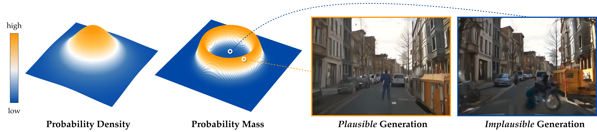
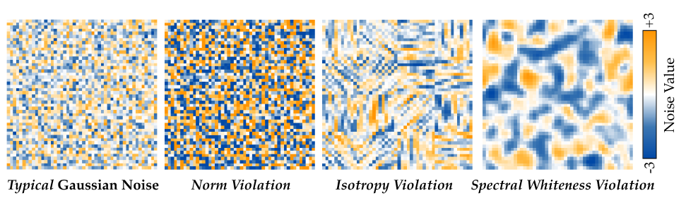

The Typical Set of a High-Dimensional Gaussian Distribution
Never look down on Gaussian distribution, especially when it is getting high-dimensional — where the samples actually live will surprise you.
Under a standard Gaussian distribution, the point with the highest probability density is the zero vector 0. But in high dimensions, a random sample is almost never close to 0. This may seem contradictory: how can the point with the largest density be so unrepresentative of actual samples?
The key is that probability mass depends on both density and volume. Mass is density times volume, and in high dimensions the region near the origin has extremely small volume. As we move outward, concentric spherical shells have much larger surface area, growing roughly as rd−1. Thus, although the Gaussian density decreases with radius, the available volume increases rapidly enough that most samples occur away from the origin.
For a d-dimensional standard Gaussian, the norm of a typical sample is concentrated near √d. In other words, most probability mass lies in a thin shell at this radius: not near the center, and not far out in the tails. This radial concentration is one way to describe typicality in high-dimensional Gaussians. More generally, typical samples are characterized not by having the highest density at a single point, but by satisfying the aggregate statistics expected under the distribution.
Why does this matter for diffusion models? Diffusion models are trained to denoise Gaussian noise that was drawn from this typical set. If gradient-based optimization pushes the initial noise toward the high-density interior (e.g., near 0) or far outside the shell, the denoiser sees inputs it almost never encountered during training. This leads to approximation errors and, ultimately, implausible or out-of-distribution generations. Keeping the noise inside the typical set is therefore a principled constraint, not a heuristic.
See it for yourself
Each point below is a sample from a d-dimensional Gaussian, plotted at its true Euclidean norm as the distance from the origin (with a random angle). Watch the ring tighten around √d as you increase the dimension.
Why Samples Concentrate on a Shell: the Math
Formal results that quantify how tightly Gaussian samples cluster around radius √d.
Let \(\mathbf{x} \sim \mathcal{N}(\mathbf{0}, I_d)\) be a \(d\)-dimensional Gaussian random vector with coordinates \(x_1, \ldots, x_d\) drawn i.i.d. from \(\mathcal{N}(0,1)\). Then the squared norm is a sum of independent squares: \(\|\mathbf{x}\|_2^2 = \sum_{j=1}^d x_j^2 \sim \chi^2_d\), which has mean \(d\) and variance \(2d\). The coefficient of variation \(\operatorname{std}(\|\mathbf{x}\|_2^2)/\mathbb{E}[\|\mathbf{x}\|_2^2] = \sqrt{2/d} \to 0\) — the squared norm concentrates tightly around \(d\), so the norm concentrates around \(\sqrt{d}\).
The results below make this precise and derive the practical regularizer used in our noise optimization.
Let \(\boldsymbol{\varepsilon} \sim \mathcal{N}(\mathbf{0}, I_d)\). Then for any \(\delta \in (0,1)\),
Proof sketch. Write \(\|\boldsymbol{\varepsilon}\|_2^2 = \sum_{j=1}^d \varepsilon_j^2 \sim \chi^2_d\). Apply the Laurent–Massart inequality to get upper and lower tail bounds each at level \(x = \log(2/\delta)\); a union bound gives the two-sided result. Dividing by \(d\) yields the relative deviation stated above. \(\square\)
Define the norm regularizer \(\mathcal{C}_{\mathrm{norm}}(\boldsymbol{\varepsilon}) := \bigl(\|\boldsymbol{\varepsilon}\|_2 - \sqrt{d}\bigr)^2\). Then with probability at least \(1-\delta\),
The penalty a typical sample incurs is \(O(\log(1/\delta))\), independent of \(d\) at leading order. This justifies using \(\mathcal{C}_{\mathrm{norm}}\) as a regularizer: it is small for in-distribution noise and large for atypical noise.
Let \(R = \|\boldsymbol{\varepsilon}\|_2\). Then
Although the typical radius grows as \(\sqrt{d}\), the absolute width of the shell
containing most probability mass stays bounded — converging to \(1/\sqrt{2}\) ≈ 0.71.
The shell becomes relatively thinner with dimension even as it expands.
This is why the interactive demo shows an ever-tighter ring for larger \(d\).
Proof sketch.
\(R\) follows a chi distribution with \(d\) degrees of freedom, with
\(\operatorname{Var}(R) = d - 2\bigl(\Gamma((d+1)/2)/\Gamma(d/2)\bigr)^2 \to 1/2\)
by Stirling's approximation. \(\square\)
Norm Alone is Not Sufficient for Typicality
Gradient-based optimization can push noise off the typical set in multiple ways — norm, isotropy, and spectral whiteness must all be maintained simultaneously.
Diffusion models are trained to generate samples from noise drawn from the Gaussian prior. When the noise leaves the typical set — where most training-time samples lie — the resulting out-of-distribution noise can produce implausible outputs that are unlikely under the model's learned distribution. Since gradient-based noise optimization can perturb noise away from the typical set, inducing atypical coordinate patterns or structured spectral artifacts, we employ a distributional objective \(\mathcal{C}(\boldsymbol{\varepsilon})\) that combines three statistics of high-dimensional Gaussian noise:

Probability density vs. probability mass in a high-dimensional Gaussian distribution. Noise sampled from the typical set leads to plausible generations, whereas noise outside the typical set — despite possibly having high probability density — can produce implausible generations, e.g., humans becoming blurry or transforming into vehicles.
For Gaussian noise \(\boldsymbol{\varepsilon} \sim \mathcal{N}(\mathbf{0}, I_d)\), the squared norm satisfies \(\|\boldsymbol{\varepsilon}\|_2^2 \sim \chi^2_d\) and therefore concentrates sharply around \(d\). Equivalently, the radius \(R = \|\boldsymbol{\varepsilon}\|_2\) follows a chi distribution with \(d\) degrees of freedom, whose standard deviation remains bounded independently of \(d\) and approaches \(1/\sqrt{2}\) as \(d \to \infty\). Thus, although the typical radius grows as \(\sqrt{d}\), the absolute width of the shell containing most probability mass remains approximately constant. This motivates penalising deviations of the squared norm from its typical value:
While norm concentration enforces typicality at a global scale, the optimized noise may still contain local correlations or structured coordinate patterns that are unlikely under an i.i.d. Gaussian prior. To encourage coordinate-wise independence, the entries of \(\boldsymbol{\varepsilon}\) are randomly permuted and partitioned into \(m\) subvectors \(\{\boldsymbol{\varepsilon}_i\}_{i=1}^m \subset \mathbb{R}^k\), where \(d = mk\). Under the Gaussian prior, these subvectors behave as i.i.d. samples from \(\mathcal{N}(\mathbf{0}, I_k)\), so their empirical second moment
should be close to \(I_k\). We penalise blockwise deviations from isotropy:
averaged over multiple random permutations.
Even when noise remains typical in coordinate space, gradient-based optimization can introduce structured frequency-domain artifacts. Since standard Gaussian noise has a flat expected power spectrum, we encourage the optimized noise to remain spectrally white. Let \(\mathcal{F}\) denote a unitary discrete Fourier transform and compute the power spectrum \(\mathbf{P} = |\mathcal{F}(\boldsymbol{\varepsilon})|^2\). Aggregating \(\mathbf{P}\) into \(B\) frequency bins gives bin-averaged powers \(\{\hat{p}_b\}_{b=1}^B\). We minimise their variance:

Examples of atypical Gaussian noise. Left: typical noise sampled from the Gaussian prior. Others: noises perturbed to violate norm concentration, isotropy, and spectral whiteness, respectively. Violating norm concentration produces noise with globally biased values; violating isotropy introduces local coordinate patterns; violating spectral whiteness produces structured, non-white patterns in the frequency domain.